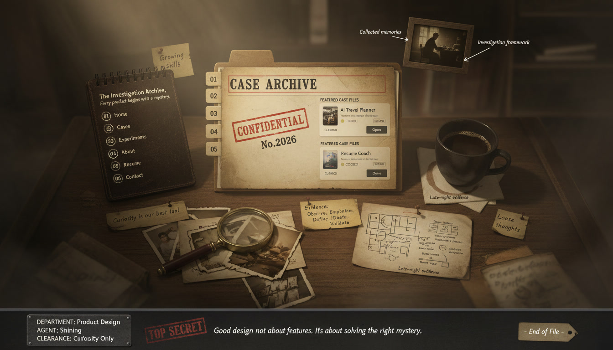

Shining Cao — The Investigation Archive
CASE 01 / RESEARCHSynthetic UATHumans × AI agentsOpen file ↗ CASE 02 / WEB DESIGNThe EmmysOne system. Many awards.Open file ↗ CASE 03 / ESIA ↗
CASE 03 / ESIA ↗
 CASE 04 / MYCHART ↗
CASE 04 / MYCHART ↗
INVESTIGATE / Select a case file
Choose a file on the desk to begin your investigation ↓
ARCHIVE INDEX / 4 INVESTIGATIONS
The case files
CASE 01 / ACTIVE INQUIRY
Synthetic UAT
Can an AI agent reveal the same usability problems as a person?
A research prototype comparing human and AI performance across two cloud billing flows.
Open case file
THE INVESTIGATOR
Hi, I’m Shining.
Across media, commerce, healthcare and cloud billing, I’m drawn to the moments where people need to make a decision with incomplete information.
My current work explores what AI agents can tell us about those moments, and where we still need to observe people directly.
Get in touch ↗